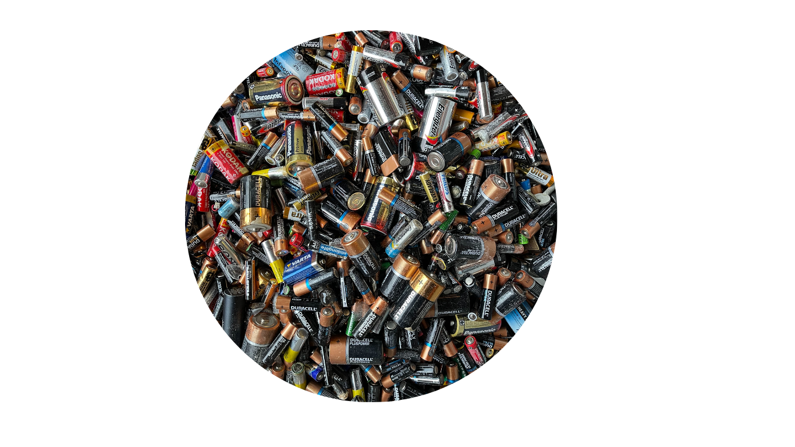

What Can Be Recycled?
Take Action for Our Enviorment: Explore what household items you can recycle to ensure the reuse of their minerals!
Elements that can be recycled:
Copper, Lithium, Nickel, Cobalt, Aluminum, Zinc
These can be found in common household materials such as:
fridges, microwaves, dishwashers, pots and pans, reusable cutlery, foil, cosmetics, food additives
Try and donate some of these items to your local recycling center!